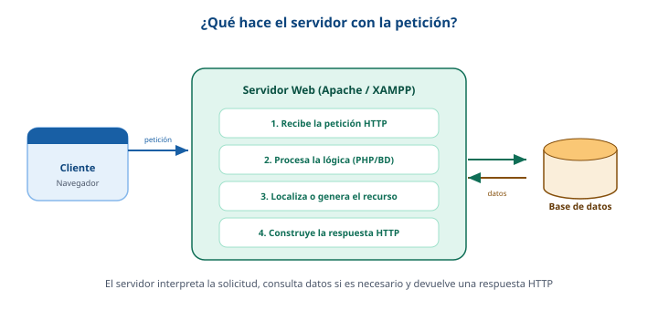

Procesamiento en el servidor web
Cuando la petición llega al servidor, este la interpreta, ejecuta la lógica que haga falta, consulta datos si es necesario y arma la respuesta que le devolverá al navegador.
¿Qué es un servidor web?
Un servidor web es un programa que recibe peticiones HTTP y devuelve recursos. Es el punto de comunicación entre las plataformas y los lenguajes de programación. Ejemplos conocidos son Apache y el entorno local XAMPP, que pueden servir tanto contenido estático (HTML, CSS, imágenes) como dinámico (generado con PHP u otros lenguajes).

Pasos del procesamiento
- Recibe la petición HTTP del cliente.
- Procesa la lógica del lado del servidor (por ejemplo PHP, Python o Node.js).
- Si hace falta, consulta una base de datos.
- Arma el documento HTML y las cabeceras de respuesta.
- Envía la respuesta HTTP de vuelta al navegador.
Ejemplo de un encabezado HTTP de respuesta
Antes del contenido HTML, el servidor envía una cabecera con el código de estado y algunos datos sobre el recurso entregado:
HTTP/1.1 200 OK
Date: Fri, 29 May 2026 14:30:00 GMT
Server: Apache/2.4.58 (Unix)
Content-Type: text/html; charset=UTF-8
Content-Length: 1840
Connection: keep-alive
(a continuación viaja el documento HTML...)
Algunos códigos de estado que conviene conocer:
| Código | Significado |
|---|---|
| 200 OK | La petición tuvo éxito y se devuelve el recurso. |
| 301 / 302 | Redirección a otra dirección. |
| 403 Forbidden | El acceso al recurso está prohibido. |
| 404 Not Found | El recurso solicitado no existe. |
| 500 | Error interno del servidor. |
El código 200 indica éxito. La cabecera Content-Type le dice al navegador que debe interpretar la respuesta como HTML.